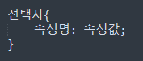
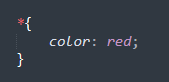
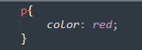
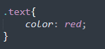
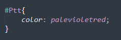
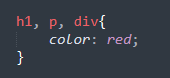

css선택자

선택자 : 어떤 요소에 스타일을 적용 할것인지에 대한 정보
기본 선택자 종류
-
전체 선택자
모든 요소를 선택함.
*(애스터리스크)는'문서 내의 모든 요소'를 의미하는 기호

=문서 내 모든 요소의 글자 색을 빨간색으로 지정!
-
태그 선택자
주어진 이름을 가진 요소를 선택. '유형 선택자'라고도 함
주어진 이름을 가진 요소가 다수일 경우, 해당 요소들을 모두 선택

=문서 내 모든 p태그 요소의 글자 색을 빨간색으로 지정
-
클래스 선택자
주어진 class속성값을 가진 요소를 선택
주어진 class속성값을 가진 요소가 다수일 경우,해당 요소를 모두 선택(전역속성)

=문서 내 class가 "text"인 모든 요소의 글자 색을 빨간 색으로 지정
-
아이디 선택자
주어진 id속성값을 가진 요소를 선택함
id는 고유한(uniqe)식별자 역활을 하는 전역속성

=문서 내 id가 "Ptt"인 요소의 글자 색을 빨간 색 으로 지정
그룹 선택자
다양한 유형의 요소를 한꺼번에 선택할때 사용
쉽표(,)를 이용해 서택자를 그룹화 함

=문서 내 모든 h1, p, div태그 요소의 글자 색을 빨간 색 으로 지정
선택자가 겹치는 경우
선택자가 겹치는 경우, 기본적으로 나중에 작성된 스타일이 적용됨
선택자가 다르지만 요소가 겹치는 경우, 선택자 우선순위에 의해 적용될
스타일이 결정됨
선택자 우선순위 (아이디 > 클래스 > 태그)